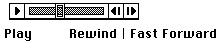

Defining Your Own Control Definition Function
The Control Manager allows you to implement controls other than the standard ones (buttons, checkboxes, radio buttons, pop-up menus, and scroll bars). To implement nonstandard controls, you must define your own control definition functions. Typically, the only types of controls you might need to implement are sliders or dials, which are similar to scroll bars in that they graphically represent a range of values the user can set. As scroll bars have scroll boxes, your sliders and dials should have indicators for setting values and indicating current settings.Dials and sliders display the value, magnitude, or position of something, typically in some pseudo-analog form--for instance, the position of a sliding switch, the reading on a scale, or the angle of a needle on a gauge; the setting may be displayed digitally as well. The user should be able to change the control's setting by dragging its indicator.
Figure 5-24 illustrates a control supported by an application-defined control definition function. This control might be used to play back a sound or a QuickTime movie. The application might wish to define the control so that it plays the sound or movie at normal speed when the user clicks the control part on the left. The application might
use the indicator along the slider to show what portion of the entire sound or movie sequence is currently playing. The application also allows the user to move quickly forward and backward through the sequence by dragging the indicator. Finally, the application might wish to define the two control parts on the far right so that they play backward (that is, "rewind") and play forward quickly (that is, "fast forward"), respectively, when the user clicks them.
Rather than create such a control yourself, you might be tempted to use a scroll bar for this purpose. Do not do so. Using a scroll bar for any purpose other than scrolling through a window compromises the consistency of the Macintosh interface.
- Note
- When you design a dial or slider, be sure to include meaningful labels that indicate to users the range and the direction of the indicator.
To define your own nonstandard control, you must write a control definition function, compile it as a resource of type
'CDEF', and include it in your resource file. (For more information about creating resources, see the chapter "Resource Manager" in Inside Macintosh: More Macintosh Toolbox.)When you use Control Manager routines, they in turn call your control definition function as necessary. For example, for the control in Figure 5-24 to work properly, its control definition function must be able to
You can also use your control definition function to modify or expand certain Control Manager behaviors; for example, you can implement your own manner of dragging an indicator, and you can perform your own type of control initialization.
- draw the control--including repositioning its indicator, making it inactive or active, and highlighting its control parts appropriately when mouse events occur in them
- determine when a mouse-down event occurs in a control part
- calculate the region of the control and its indicator
- move the indicator and update the control record with a new setting
For details about writing a control definition function, see "Defining Your Own Control Definition Function" beginning on page 5-109.